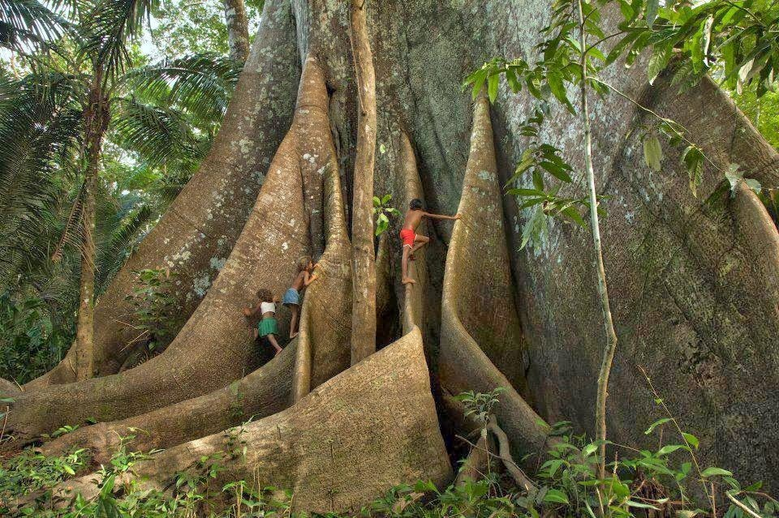

Sumaúma
Ceiba pentandra
Expectativa de vida: A expectativa de vida da Sumaúma varia de algumas décadas
a alguns séculos, dependendo das condições ambientais.
Altura máxima: Pode atingir alturas de mais de 70 metros.
Sobre
A Sumaúma é uma das árvores mais emblemáticas da floresta tropical, conhecida por seu porte majestoso e tronco maciço. Possui folhas palmadas e flores grandes e vistosas que atraem uma variedade de polinizadores. Seu tronco é reto e pode ter até 3 metros de diâmetro, com raízes escoras que ajudam a sustentar sua imponente estrutura. A Sumaúma desempenha um papel vital nos ecossistemas onde ocorre, fornecendo habitat e alimento para uma variedade de espécies animais e vegetais, e contribuindo para a manutenção da biodiversidade e da saúde do ecossistema florestal.